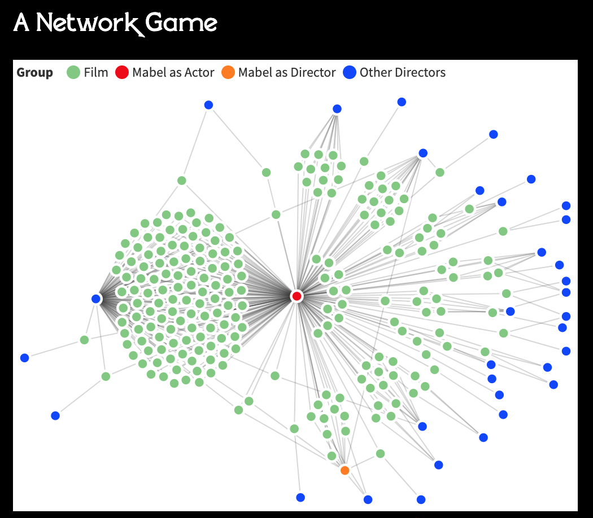
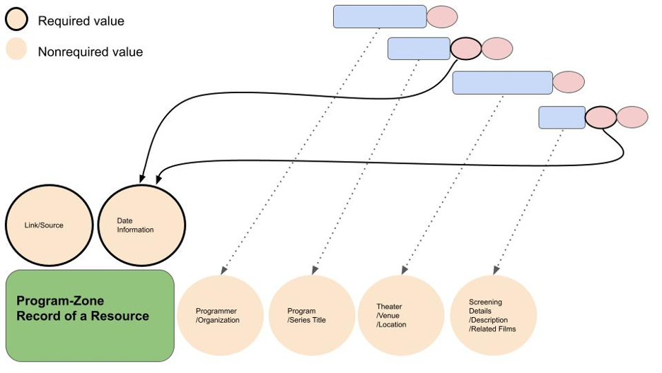
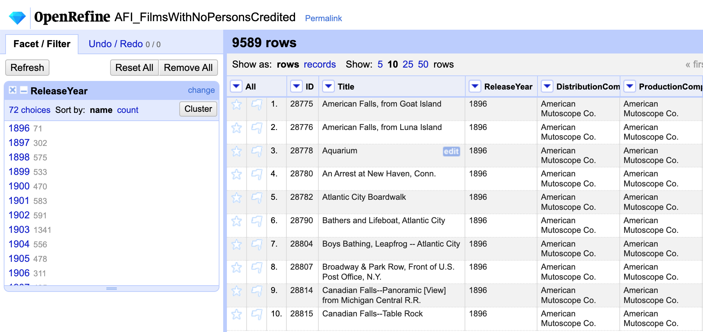
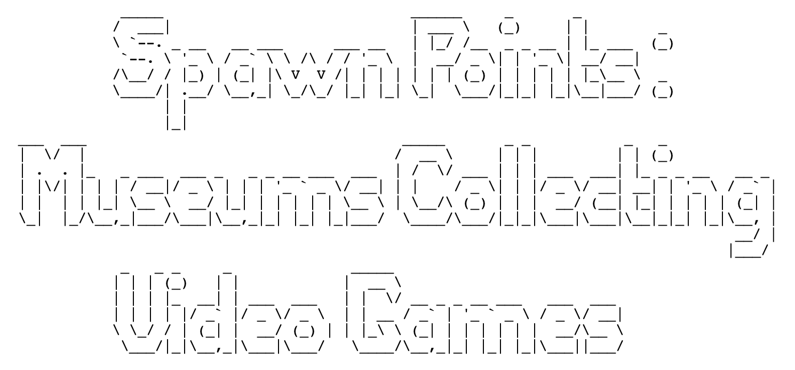
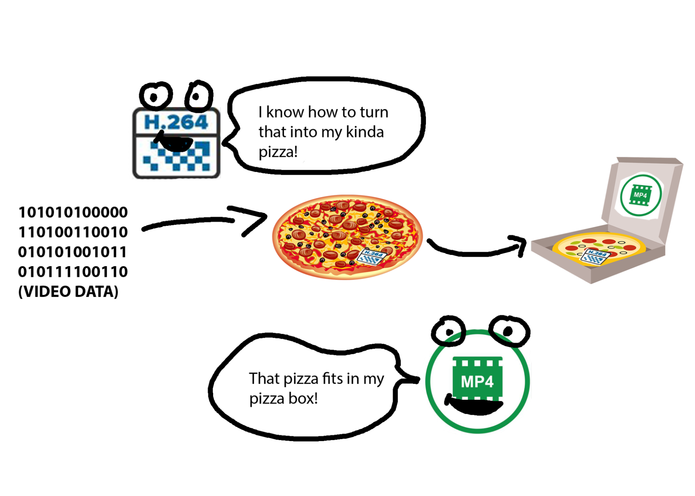
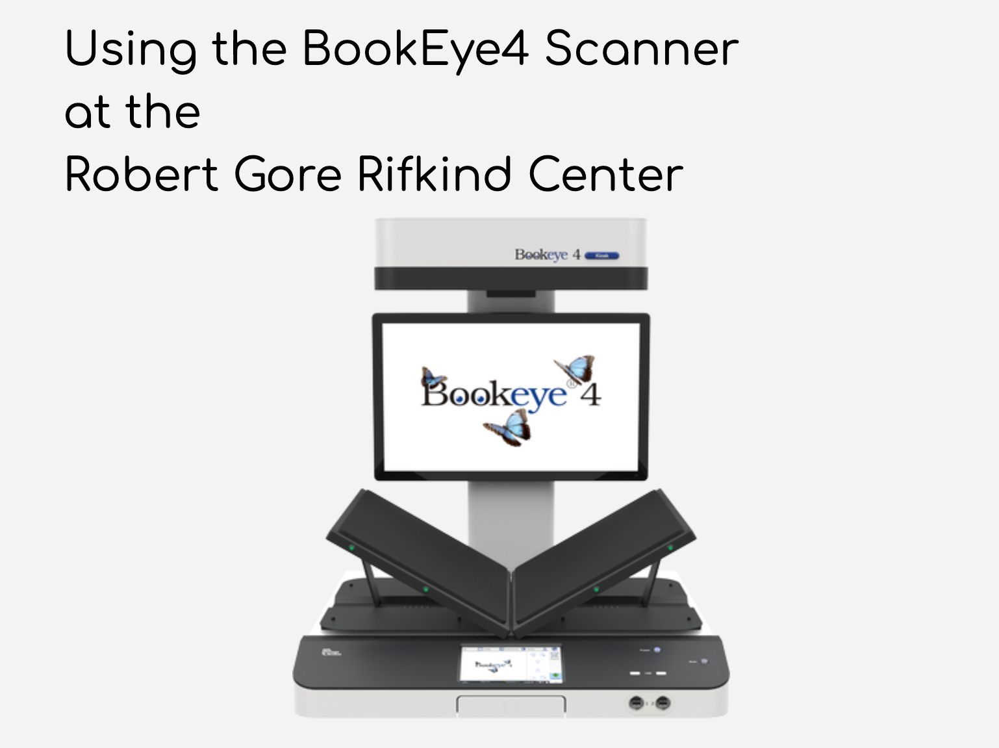

DIGITAL HUMANITIES PORTFOLIO
Submitted for the completion of a Graduate Certificate in Digital Humanities at the University of California, Los Angeles in June of 2022
STATEMENT
Digital Humanities (aka humanities computing) applies computational tools and digital methods towards humanities research. For me, the other side of the coin is equally vital: applying humanities methods and critical analysis towards the digital, computational, and related technologies. To me, there is no value in the uncritical application of tools. As such, my dh scholarship balances exploration and experimentation with critique and reflection. I take up dh as a site of not just knowledge production, but also system critique, resource sharing, and information service. My dh is disinterested in traditional knowledge hierarchies and neoliberal digital hype.
Critical Information Studies
My MLIS coursework in UCLA’s Information Studies department has shaped my understanding of how the tools of knowledge organization and dissemination can exert as much influence as the agents of knowledge production themselves. Just as there are no neutral archives, there are no neutral knowledge organization systems, classification systems, tools, designs, databases, schemas, or file formats.
For more see:
- Siva Vaidhyanathan’s Critical Information Studies Manifesto
- Michelle Caswell, Ricardo Punzalan, T-Kay Sangwand’s Introduction to Critical Archival Studies
- Michelle Caswell and Itza A. Carbajal primer on Critical Digital Archives
- Maura Seale, Alison Hicks, Karen P. Nicholson’s “Toward a Critical Turn in Library UX”
- Kate Theimer’s examination of archives as a terminology in dh projects
Film and Media History
With a background in Film Studies, I take interest in demonstrating the benefits of digital humanities methods to film and media scholarship. I believe that certain forms of ‘distant viewing’ and reshaping of historical moving image material can yield exciting new avenues of research on the history and theory of moving image cultures.
Further, as a media archives and information professional, I see data as media, not just raw material. As such, I feel that it is important to consider the tools (hardware, software, technology) that comprise digital humanities methods within their historical and cultural context–exploring their cultural protocol as much as their exciting potentials.
For more see:
- The Arclight Guidebook to Media History and the Digital Humanities
- Dimitrios Latsis and Grazia Ingravalle’s Introduction to “Digital Humanities and/in Film Archives”
- Miriam Posner and Lauren Klein on thinking of data as yet another type of media
- Lev Manovich on the convergence of media technologies and digital computing
- Lisa Gitelman’s Always Already New: Media, History, and the Data of Culture
Beyond Digital Anxiety and Digital Hype
My interest in digital preservation drives my passion for demystifying, obscuring, or otherwise laying plain how various digital tools, devices, methods, and processes actually operate. On this matter, I draw from Digital Preservation practitioner Trevor Owens, who observes that both digital hype and digital anxiety pose equal threat to maintaining access to history and culture, well into the future.
On the point of digital hype, I would be remiss to not mention the criticisms of dh as facilitator in the neoliberal takeover of the university. These critics note how valorizing digital methods and project based learning might contribute to a redefinition of technical expertise as a form (indeed, the superior form) of humanist knowledge.”
This is not my aim. As such, the dh I wield does not prioritize adherence to the prescriptions of existing tools and systems but instead thinks through situations holistically. I take pride in interrogating if, how, and why certain technologies make themselves incompatible with aspects of humanistic inquiry. To this point, I believe that the field is in dire need of more clear documentation and conversation around the affordances, limitations, advantages, design assumptions, social influence, and material aspects of computation, database development, and systems design.
You will see reflection, documentation, and holistic relations to technology as consistent themes in the work I share below.
For more see:
- Trevor Owens’s The Theory and Craft of Digital Preservation
- Daniel Allington, Sarah Brouillette, David Golumbia’s history and critique of the neoliberal politics of Digital Humanities
- Ursula M. Franklin’s lectures on “The Real World of Technology”
- Paige C. Morgan’s “The Consequences of Framing Digital Humanities Tools as Easy to Use”
PROJECTS
Below, I share a selection of projects undertaken during my time at UCLA. Each project demonstrates some form of engagement with dh.
Mabel's Film Career
During the Winter quarter of 2021, Miriam Posner’s
Introduction to Digital Humanities
course guided me through the use of a wide range of tools for dh projects.
My final for the course, which takes the filmography of silent star and filmmaker Mabel Normand as a subject of analysis, involved each of the tools we covered.
This project was as much about experimentation with these tools as it was about assessing where they were incompatible with certain aspects of historical film data.
Tools used: ArcLight, CSS, Flourish, GitHub, HTML, Lantern, OpenRefine, ParseHub, RAWgraphs, Tableau, Voyant
A Strategy for Film Programs Aggregation
In the Spring quarter of 2021, Melissa Gil’s Introduction to Metadata familiarized me with fundamental concepts for structuring information and making that information accessible.
My final project for the course developed a basic proposal for an online, public-facing aggregator of film programming information from current and historic sources.
I feel easy access to this information as a large searchable database would be extremely beneficial to research on film history and film culture.
Full write-up available upon request.
Tools used: HTML, OpenRefine, GNU Image Manipulation Program
Visualizing U.S. Feature Film Production, 1893-1993
In Fall 2021, my friend and colleague Patricia Ledesma Villon and I interned at the AFI Catalog of Feature Films, which has been maintained by American Film Institute (AFI) since 1967.
The catalog, which migrated to an online database in 2003, collects information about feature films with theatrical releases between 1893-1993.
Under the supervision of Catalog Manager Sarah Blankfort Clothier, Patricia and I used the Media History Digital Library’s Lantern database of early film trade magazines to enrich catalog data on films from the 1920s related to the Women They Talk About project and user-tested a newly implemented database system.
Most of our time was spent experimenting with cleaning, reshaping and visualizing the catalog data.
Please Note: The AFI Catalog’s data is proprietary, but I may be able to share some of these visualizations upon request.
Please reach out if you are curious!
The data cleaning provided a valuable opportunity to further think through the challenges of converting information about film history into computable data.
The visualizations raised some interesting questions about twentieth century film production trends, and opportunities for future quantitative research on film history.
For Dee Win’s Internship course in UCLA’s Information Studies department (IS 498), Patricia and I drafted an annotated bibliography,
available here,
collecting some key influences and relevant debates related to our work at AFI.
Tools used: Lantern, OpenRefine, RAWgraphs, Tableau
Spawn Points
In the Fall quarter of 2021, Kathy Carbone’s Museums in the Digital Age (INF STD 289) surveyed a wide range of issues arising as museums adopt or refuse digital strategies for collections, preservation, exhibition, outreach, public service, education, and research.
To orient us to some of the aspects of digital collection building platforms we played with Omeka, and each built our own tiny “museum of museums.”
Creating "Spawn Points," a digital collection highlighting museums that collect video games, gave me a chance to explore the affordances and limitations of Omeka’s platform for building out a digital exhibit, customizing presentation styles, and maintaining catalog information.
Tools used: Omeka
User Expectations for an AAPI Studies Digital Textbook
In the Winter quarter of 2022, I took Lynn Boyden’s User Experience Design course (INF STD 279). The core of the course was hands-on learning, and Lynn paired us with non-profit “client” organizations with genuine information architecture and user experience research needs.
In addition to some valuable learning about key concepts in user experience design and research, working with the UCLA Asian American Studies Studies Center (AASC) allowed me and my colleagues to gain a sense of essential but easy to overlook project management skills like project scoping, group goal setting, research methods, presentation strategies, and collaborative documentation.
My user experience research team worked to provide the AASC’s digital textbook design team with a report on basic functional requirements, desired features, key priorities, and consistent pain points among high school educators that would use the finished product.
We conducted interviews with high school educators across the country, analyzed their responses, and constructed user personas and journey maps.
Tools used: User Research Interviews, OpenRefine, Mural
Access Copy Video Files Two Ways
In Spring 2022, I took Miriam Posner’s course on Documentation in the Digital Humanities department (DGT HUM 299). We spent the quarter discussing what makes some tutorials good and bad (there are lots of bad ones out there). We also drafted some of our own and tested each other's work.
My Digital Humanities capstone project is a document of two tutorials that walk through a responsibility I’ve had the past two years as a Digital Content Assistant at the UCLA Film & Television Archive: making minor adjustments to video files before uploading them to YouTube. As an exercise in holistic approaches to technology use, these tutorials explore two different methods of doing the same thing: first through a video editing application with a GUI (Graphic User Interface) called Shotcut, and then with the command line tool ffmpeg.
Writing these tutorials and their (lengthy) appendix helped me interrogate some of my own assumptions about technology and explanations. Those already familiar with ffmpeg and command line tools will probably find the appendix material to be the most interesting - though I would be appreciative of any comments you may have about any section.
Tools used: Shotcut, ffmpeg, GNU Image Manipulation Program, Folge,
Digitization Documentation at the Robert Gore Rifkind Center
In the Spring of 2022, I was an intern at the Los Angeles County Museum of Art (LACMA), participating in a digitization pilot program for the Collection Information and Digital Assets Department (CIDA) and Robert Gore Rifkind Center for German Expressionist Studies.
Working under the guidance of Digital Assets Specialist Sarah Pham, I began digitizing artist periodicals and rare books in the Rifkind collection.
As the first intern in the pilot program, I produced documentation and troubleshot technical and workflow issues for a sustainable, permanent, ongoing digitization program.
Sarah and I discussed ways to build consistency, reliability, ease of use, and quality control into the workflow.
I was grateful to have an opportunity to think about strategies for prioritizing long term success over short term 'efficiency.’
Tools used: Bookeye Image Scanner, Adobe Creative Cloud Suite
RESOURCES
Below I share links to various resources that have guided me in my dh work. I hope they help you too!
Tools
- Nathalie Lawhead’s fun tools roundup!
- MediaArea
- RAWgraphs (great for getting a quick, simple viz in 2 min)
- WTFcsv (great for your first past inspecting some data)
Tutorials and Lessons
- Miriam Posner’s tutorials
- Library Carpentry’s lessons
- Ashley Blewer’s tutorials
- Anyone Can Cook (R programming language course)
Writing and Thought
- Phil Agre's "How to help someone use a computer" (This may be the single most important thing I've read during my two years in UCLA's Info Studies dept.)
- Data Feminism (Open Access)
- Wendy Hui Kyong Chun on segregation in social media data structures
- Design Justice: Community-Led Practices to Build the Worlds We Need (Open Access)
- A nice primer on prescriptive and holistic technologies
- Steven J. Jackson’s “Rethinking Repair” / “Broken World Thinking”
- Nathalie Lawhead’s Anti-Artificial Scarcity Manifesto
- Mark Sample’s "The Black Box and Speculative Care"
- and of course, Muñoz and Rawson’s Against Cleaning